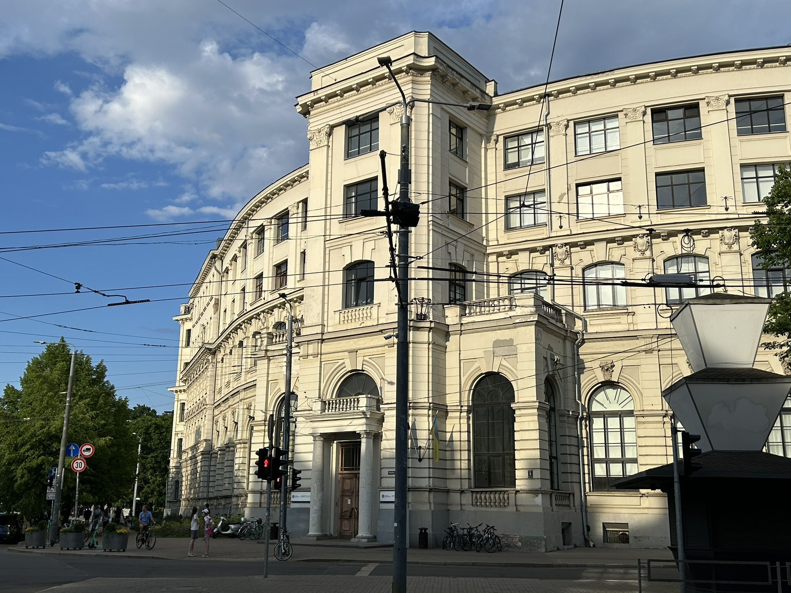

Septiņi attīstības posmi līdz studijām Datorikas fakultātē
Reinis Odītis
Mans ceļš uz Latvijas Universitāti
Foto: Reinis Odītis, Konstruktori
Konstruktori bērnībā
Jau no sākta gala nespēju nosēdēt mierīgi. Vajadzēja darboties, rokas nelika mieru. Vecumam raksturīgi
vecāki atrada nodarbes, kur likt lietā dotās dāvanas.
Matemātika un klavieres
Uzsākot savas skolas gaitas, nokļuvu pie divām šķietami nesaistītām, taču ļoti papildinošām interesēm -
matemātikas un klavierspēles, kas izrādījās paliekošas vērtības manā attīstības ceļā.
Foto: Reinis Odītis, Pirmā skola
Foto: Reinis Odītis, Rīgas 2. Valsts ģimnāzija
Mācības valsts ģimnāzijā
Tuvojoties sestās klases beigām, nonācu pie sprieduma, ka jāturpina mācības vidē, kura piedāvā jaunus
izaicinājumus. Septīto klasi iesāku Rīgas valsts 2. ģimnāzijas sastāvā.
Programmēšanas olimpiādes
Vidusskolas laikā aizrāvos ar sporta programmēšanu. Pēc informātikas skolotāja maiņas satiku
pasniedzēju, kas ieaicināja apgūtās prasmes praktizēt akadēmiskā disciplīnā.
Foto: Reinis Odītis, Programmēšana

Foto: Reinis Odītis, LU BVEF
Pamestas studijas
2020. gadā uzsāku savas studijas Latvijas Universitātes Biznesa vadības un ekonomikas fakultātē. Saņēmu
budžeta vietu, taču šis ceļa posms izrādījās īsāks nekā domāts.
Darbs Datorikas fakultātē
Pēc studiju pamešanas nācās domāt, ko tālāk iesākt, kur darboties. Nācās atrast darbu. Pēc trīs nedēļu
ilgiem mēģinājumiem nonācu pie iespējas strādāt Latvijas Universitātes Datorikas fakultātē.
Foto: Reinis Odītis, Jauns amats
Foto: Reinis Odītis, Datorikas studijas
Studijas Datorikas fakultātē
2021. gada septembrī uzsāku savu otro piegājienu bakalaura diploma saņemšanā. Šoreiz, apgūstot jau
iepriekš praktizētās datorzinātnes.